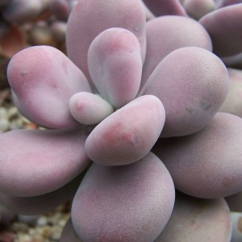
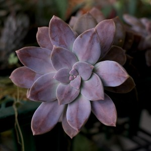
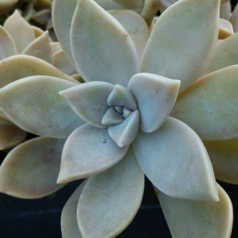
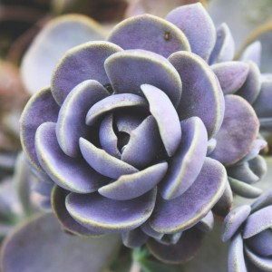
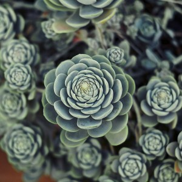
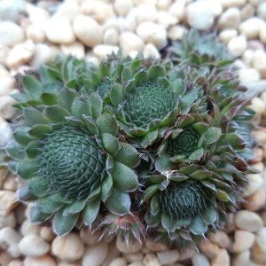
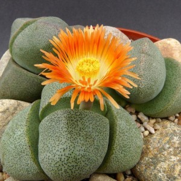
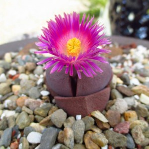
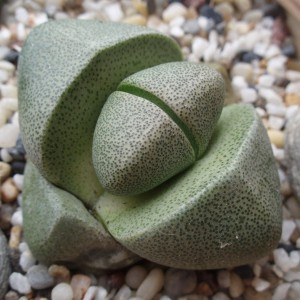

El género Graptopetalum incluye al menos dieciocho especies distintas muy decorativas y con un aspecto vistoso. Si vas a adquirir uno, lo más probable es que encuentres la variedad Graptopetalum Paraguayense, muy apreciada en jardinería por sus rosetas y sus flores blancas en forma de estrella. Destaca también la variedad Graptopetalum Superbum, con su color entre rosa y violeta. Por último, otra especie llamativa por sus flores es la Graptopetalum Amethystium, que resiste muy bien las heladas. El riego de estas plantas, como en la mayoría de suculentas es moderado en los meses cálidos y muy bajo o nulo en invierno. En general soportan bien el frío, siempre que la tierra permanezca seca. Durante el resto del año, esta planta prefiere estar expuesta al sol y con temperaturas moderadas a cálidas.



OROSTACHYS
Se han aceptado sólo doce especies dentro de este género, en general son pequeñas o medianas, lo que nos permite utilizarlas en composiciones con otras plantas, siempre que las necesidades de riego y abono sean similares. Es probablemente uno de los géneros más desconocidos de las suculentas, aunque hay algunas variedades muy decorativas, como la Orostachys Furusei, con un color entre plateado y verde y con una textura que destacará en cualquier composición. Otra variedad interesante es la OROSTACHYS SPINOSUS, con una roseta verde y compacta, que además tolera el frío como ninguna otra. Se sabe que esta variedad puede sobrevivir a temperaturas hasta -40ºC, aunque es poco probable que tengas que exponerla a estos extremos.



PLEIOSPILOS
El género Pleiospilos está emparentado con una variedad que vimos en el post anterior: los Lithops. Son pequeñas y muy suculentas, con sólo dos o cuatro hojas opuestas entre ellas. El tamaño que suelen alcanzar es de unos 8cm, aunque las flores pueden llegar a cubrir toda la planta. Son perfectas como plantas de interior o de invernadero, ya que la temperatura no debe bajar de los 6ºC. Toleran bien algo de sombra, aunque prefieren estar en un lugar soleado. En cuanto al riego, como es habitual en estas plantas, moderado durante el año, escaso o nulo durante el invierno. El sustrato debe drenar muy bien y ser poroso, ya que no toleran el exceso de humedad. La más conocida de estas plantas es la Pleiospilos Nelii.



| PAG. | |||
|---|---|---|---|
| 0 | INTRODUCCION | ||
| 1 | Argyroderma | Echeveria | Lithops |
| 2 | Sempervivum | Haworthia | Cactáceas |
| 3 | Aeonium | Agave | Aloe |
| 4 | Graptopetalum | Orostachys | Pleiospilos |